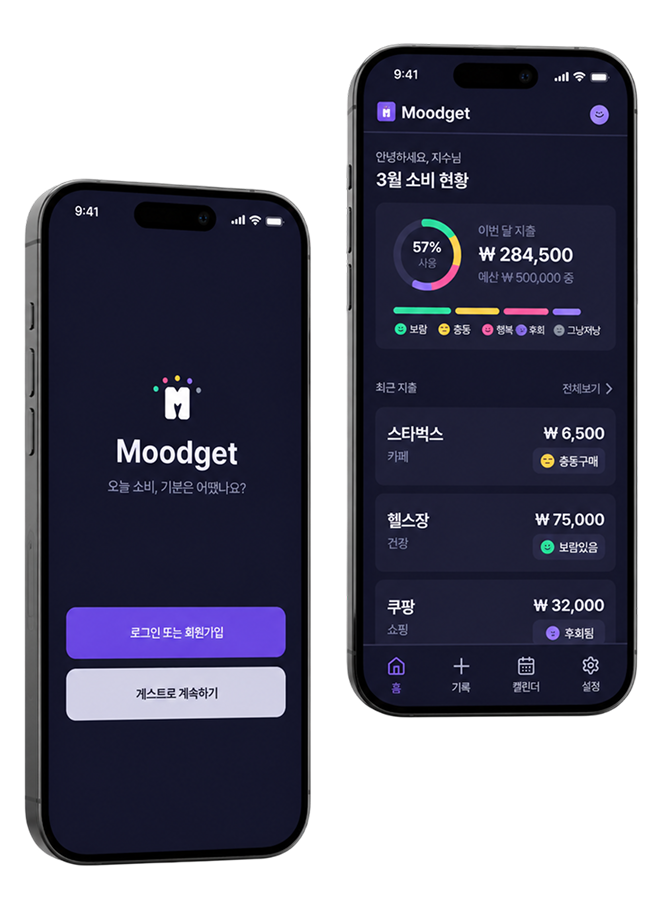

상황과 기분에 따라 소비 결정이 달라지는 사용자

Moodget
오늘 소비, 기분은 어땠나요?
감정을 기록하고 소비를 이해하는
감정 기반 소비 트래킹 앱, Moodget
Logo & Naming
Moodget은 감정을 의미하는 Mood와 예산을 의미하는 Budget을 합성한 이름이다. 사용자의 감정 소비를 함께 기록하고 이해하는 서비스의 방향성을 담았다.
Icon
Moodget은 소비 후 감정을 보람있음, 행복함, 충동구매, 후회됨, 그냥저냥의 다섯 가지 상태로 나눈다. 각 감정은 텍스트보다 먼저 인지될 수 있도록 둥근 형태의 이모지 아이콘으로 설계했다.
빠른 기록
감정 회고
예산 인지